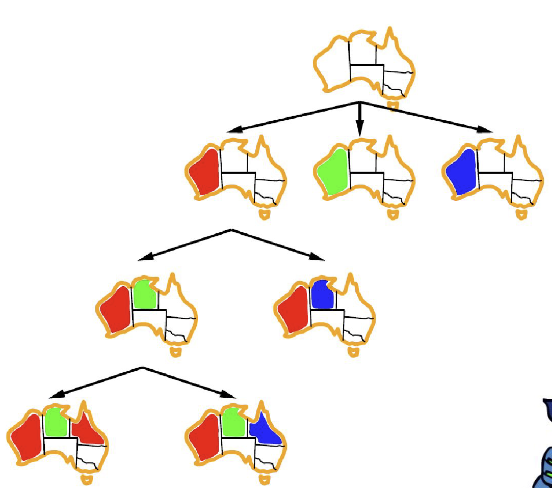
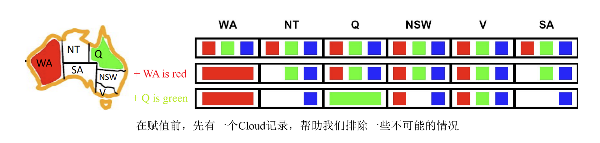
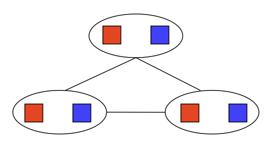

Lec 03: CSP I
CS 180 - Introduction to AI¶
Lecture 3: Constraint Satisfaction Problems¶
与搜索问题不同，CSP 是一种识别问题，即我们只需识别某个状态是否为目标状态，而无需考虑如何达到该目标。
约束满足问题是 NP-hard 的，大致意味着不存在已知算法可以在多项式时间内找到此类问题的解。
CSP 由三个因素定义： * Variables - CSPs possess a set of \(N\) variables \(X_1, \ldots, X_N\) that can each take on a single value from some defined set of values.
-
Domain - A set \(\{x_1, \ldots, x_d\}\) representing all possible values that a CSP variable can take on.
-
Constraints - Constraints define restrictions on the values of variables, potentially with regard to other variables.
典型的例子是 \(N\) 皇后问题。 变量 - \(X_{ij}\)，其中 \(0 \leq i,j < N\)。每个 \(X_{ij}\) 代表 \(N \times N\) 棋盘上的一个网格位置。
域 - \(\{0, 1\}\)。每个 \(X_{ij}\) 可以取值 0 或 1，这是一个布尔值，表示在棋盘位置 \((i, j)\) 是否存在一个皇后。
约束 - * \(\forall i, j, k \ (X_{ij}, X_{ik}) \in \{(0,0), (0,1), (1,0)\}\)。任何两个皇后不能在同一行。 * \(\forall i, j, k \ (X_{ij}, X_{kj}) \in \{(0,0), (0,1), (1,0)\}\)。任何两个皇后不能在同一列。 * \(\forall i, j, k \ (X_{ij}, X_{i+k, j+k}) \in \{(0,0), (0,1), (1,0)\}\)。任何两个皇后不能在同一主对角线或副对角线上。 * \(\forall i, j, k \ (X_{ij}, X_{i+k, j-k}) \in \{(0,0), (0,1), (1,0)\}\)。同上。 * \(\sum_{i,j} X_{ij} = N\)。满足棋盘上恰好有 \(N\) 个皇后的要求。
1. Constraints Graph 约束图¶
约束满足问题通常表示为约束图，其中节点表示变量，边表示变量之间的约束。
约束包含以下几种类型： - Unary Constraints 一元约束：涉及 CSP 中的单个变量。不会在约束图中表示，而是在必要时用于修剪其约束变量的域。 - Binary Constraints 二元约束：二元约束涉及两个变量。它们在约束图中以传统的图边形式表示。 - Higher-order Constraints 高阶约束：涉及三个或更多变量的约束也可以用 CSP 图中的边表示，它们只是看起来有点不寻常。
2. Backtracking Algorithm (Solving CSP)¶
使用回溯搜索解决——本质上是优化后的 DFS。改进基于以下原则： - 固定变量的顺序，并按此顺序选择变量的值。（因为赋值是可交换的，所以有效） - 为变量选择值时，仅选择与之前赋值不冲突的值。如果不存在这样的值，则回溯并返回到上一个变量，并更改其值。
function BACKTRACKING-SEARCH(csp) returns solution/failure
return RECURSIVE-BACKTRACKING({}, csp)
function RECURSIVE-BACKTRACKING(assignment, csp) returns soln/failure
if assignment is complete then return assignment
var $\leftarrow$ SELECT-UNASSIGNED-VARIABLE(VARIABLES[csp], assignment, csp)
for each value in ORDER-DOMAIN-VALUES(var, assignment, csp) do
if value is consistent with assignment given CONSTRAINTS[csp] then
add {var = value} to assignment
result $\leftarrow$ RECURSIVE-BACKTRACKING(assignment, csp)
if result $\neq$ failure then return result
remove {var = value} from assignment
return failure

3. Improving Backtracking¶
3.1. Filitering 过滤¶
Filtering 解决了 Can we detect inevitable failure early? 的问题
Forward Checking
检查未分配变量与当前分配变量的直接冲突！（但其他冲突他就无能为力了）

Arc Consistency
- Important: If X loses a value, neighbors of X need to be rechecked!
- Arc consistency detects failure earlier than forward checking
- Can be run as a preprocessor or after each assignment
- What's the downside of enforcing arc consistency?
- Remember: Delete from the tail!
function AC-3(csp) returns the CSP, possibly with reduced domains
inputs: csp, a binary CSP with variables {X_1, X_2, ..., X_n}
local variables: queue, a queue of arcs, initially all the arcs in csp
while queue is not empty do
(X_i, X_j) <- REMOVE-FIRST(queue)
if REMOVE-INCONSISTENT-VALUES(X_i, X_j) then
for each X_k in NEIGHBORS[X_i] do
add (X_k, X_i) to queue
function REMOVE-INCONSISTENT-VALUES(X_i, X_j) returns true iff succeeds
removed <- false
for each x in DOMAIN[X_i] do
if no value y in DOMAIN[X_j] allows (x, y) to satisfy the constraint X_i <-> X_j
then delete x from DOMAIN[X_i]; removed <- true
return removed
Limitation of Arc Consistancy See an example below:  Arc Consistancy satisfied!! BUT no solution!!!
3.2. Ordering 排序¶
在求解 CSP 时，我们会对所涉及的变量和值进行一些排序。 在实践中，使用两个广泛的原则“动态”计算下一个变量及其对应的值通常更有效，这两个原则是：最小剩余值和最小约束值： - Minimum Remaining Value 最小剩余值 (MRV) 选择未赋值且剩余有效值最少的变量（即约束最严格的变量）。
- Least Constraining Value 最小约束值 (LCV) 选择那个对其他（邻居）变量约束最少的值，即选择一个能为未来的选择保留最多可能性的值。 这需要额外的计算（例如，对每个值重新运行弧一致性/前向检查或其他过滤方法以找到 LCV），但仍然可以根据使用情况提高速度。
这很有意思！对于variable我们选择做最严格的，但对于value我们选择最宽松的。